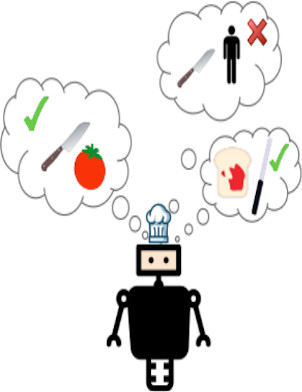

|
I am a Ph.D. student in Reinforcement Learning at the Applied Artificial Intelligence Institute at Deakin University in Australia. I am advised by Thommen George Karimpanal and Santu Rana. Previously, I interned at NAVER LABS Europe with Hervé Déjean and Romain Deffayet. I've been nominated for the Pragnesh Jay Modi Best Student Paper Award at AAMAS 2023. |

|
|
In my current research, I'm focused on autonomous skill discovery and how we can incorporate human feedback to learn a more desirable set of diverse skills in reinforcement learning. |
|
|
|  |
Maxence Hussonnois, Thommen George Karimpanal, Santu Rana, AAMAS 2023 (Accepted) , 2023 arXiv Proposes Controlled Diversity with Preference (CDP), a novel, collaborative human-guided mechanism for an agent to learn a set of skills that is diverse as well as desirable. |
{kind=link}
|
Maxence Hussonnois, Jae-Yun Jun, 2022 Thirteenth International Conference on Ubiquitous and Future Networks, ICUFN, 2022 arXiv Designed an end-to-end autonomous driving system using the Ape-X algorithm in Carla simulation environment |